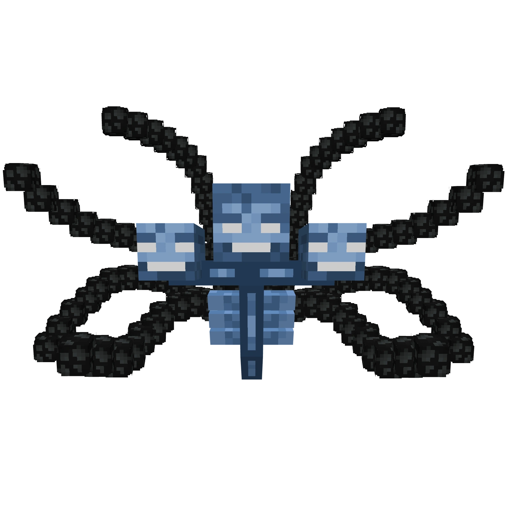

Hypixel Skyblock
Inside Hypixel Skyblock, there is a segment of the game called Dungeons. In this section of the game, you and a team of 4 other people go through a procedurally generated dungeon, killing enemies and collecting loot. After getting through the dungeon, you get to a boss room. Killing said boss will allow you to open up a loot chest to obtain rewards. As you may have noticed above, in order to play dungeons effectively, you need a team of five people. As a result, the game developers made an ingame system where you can team up with random players online, just in case you don't have enough friends online to play with. This is a very good solution, but also can be quite annoying. As a result, sometimes you can get really good teams and breeze through dungeons, and sometimes you get teammates that have no idea what they're doing, and complete ruin your attempt. Although, this is less a problem with dungeons, and more a problem with online multiplayer games in general. This is why all the good players have online communities that they have built with only good players, although this makes it a little difficult for someone new to join the dungeons community.
